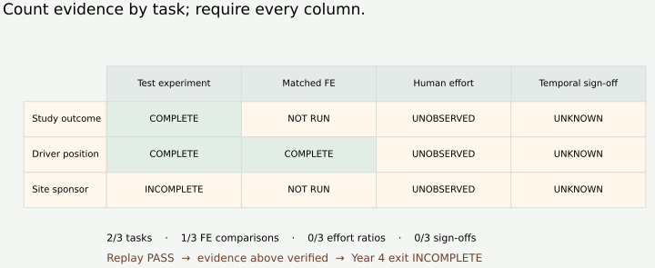
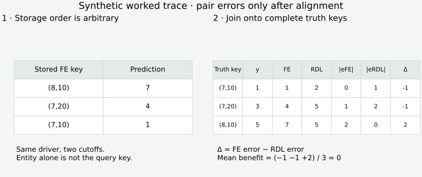

Year 4 · Quarter 4 · Lesson 160
Year 4 exit exam: defend your RelBench portfolio
Jump to tasks · Printable reference · Submission template · Measured evidence · Reproduction and remediation
1 · The decision you must defend¶
Reading route. Read the coverage → align predictions → check effort and temporal evidence → apply every gate → defend the decision.
Single win: decide whether a RelBench portfolio meets the Year 4 exit requirements, and identify exactly which observations would change that decision. Read this guide in about 15 minutes; allocate separate sessions for coding and your written defense. Closing the missing experiments is additional work.
Lesson 158 turned evidence into a bounded thesis argument. Lesson 159 showed why reconstruction performance alone cannot establish transfer to another database. This exam asks you to apply that same discipline to your own portfolio. Neither a promising foundation-model vision nor an executed reference notebook waives the Year 4 requirements.
The curriculum requires documented results versus manual feature engineering on at least three tasks, accuracy and human-effort comparisons, a passed temporal-leakage audit, and honest failure cases. A task is one database prediction problem, such as predicting a driver's finishing position at a specified cutoff. Five seeds are five fits of the same task. A matched comparison evaluates both methods on the same query population under a declared, comparable protocol.
A negative result is admissible. The exit does not require RDL to win. It requires a complete, credible comparison and a defensible explanation. This serves the mission: know what the relational models can establish before publishing a claim.
2 · Read the evidence before giving a grade¶
Executed author evidence: 98,918 saved prediction rows rescored; 45 validation decisions checked; 226 frozen inputs. Replay PASS · Year 4 exit INCOMPLETE · learner PENDING_WRITTEN_DEFENSE.
| Task | Test experiment | Matched FE | Human effort | Temporal sign-off |
|---|---|---|---|---|
| rel-trial/study-outcome | COMPLETE | NOT_RUN | NOT_OBSERVED | NOT_ESTABLISHED |
| rel-f1/driver-position | COMPLETE | COMPLETE | NOT_OBSERVED | NOT_ESTABLISHED |
| rel-trial/site-sponsor-run | INCOMPLETE | NOT_RUN | NOT_OBSERVED | NOT_ESTABLISHED |
The three declared tasks span two databases. The classification and regression reference experiments each have five completed seeds. Recommendation has a validation-only pilot and zero completed test seeds. L155 adds the matched F1 feature-engineering comparison. The other FE comparisons are missing. Frozen report.
The complete selected replay covers L151–L158's declared numerical evidence: classification reference and validation-selected lanes remain separate; L152 supplies regression; L153 contributes only its validation pilot; L155 supplies paired FE/RDL errors; L156/L157 supply temporal experiments. L154 and L158 are report views of these experiments. L159's synthetic mechanism adds no real benchmark task.
Scope check. Replay verifies saved predictions, selection histories and frozen file identities. SQL reconstruction, neighborhood audits and historical availability conclusions are inherited from pinned upstream artifacts. No new model is fitted. Whole-paper reproduction and the original human study remain NOT_RUN. Missing arrival histories and source nonfinite-gradient observations remain unresolved.


Trace question. Which cell changes if you add five more F1 training seeds? No new task or missing observation appears. Which cell changes if you finish recommendation training? Its test-experiment cell changes; FE, human effort and temporal review still need their own evidence.
3 · Recover the comparison from query identities¶
A query key is (entity_id, cutoff). The same driver can appear at several cutoffs. Aligning by driver alone loses that distinction; aligning by row position assumes the storage order is meaningful.
Worked example — synthetic, for hand calculation. Truth keys are (7,10), (7,20), (8,10) with targets 1,3,5. FE predictions are stored in reverse key order as 7,4,1; RDL predictions are stored in truth order as 2,5,5. Join both packets onto the truth keys first. FE absolute errors are 0,1,2; RDL errors are 1,2,0. The per-query benefit FE error − RDL error is −1,−1,+2, averaging zero. Row-wise subtraction before joining gives a different and invalid comparison.


For MAE, define benefit as FE MAE − RDL MAE, in finishing positions: positive favors RDL. AUROC and MAP are higher-is-better metrics, so their analogous benefit uses RDL score − FE score. Never average raw AUROC, MAE and MAP into one portfolio score. RelBench Tables 6–8.
Actual L155 result. FE test MAE is 3.948917, basic RDL is 4.013141, and benefit is −0.064225 positions. The conditional driver-bootstrap 95% interval is [−0.312329, +0.172961]. These values are rounded independently from the underlying scores. The point estimate favors FE; the interval does not settle direction. Neither superiority nor equivalence is established. The interval resamples drivers while keeping their cutoff queries together, conditional on the fitted models and this test split. It does not cover common race/time dependence, training uncertainty or new databases. L155 protocol.
4 · Keep the human clock and the validity audit separate¶
Human effort means active human work within a declared scope. Record it prospectively: log work as it occurs. The comparison here is FE active minutes / RDL active minutes. A ratio of three means FE required three times the recorded active work for that task and scope; it says nothing by itself about model quality.
Worked example — synthetic. FE build/debug/validation takes 90 active minutes and RDL takes 30: the ratio is 3. If neither arm was timed, the ratio is NOT_OBSERVED. If RDL has zero recorded minutes, division is undefined; it is not evidence of unlimited savings. Machine runtime and shared infrastructure belong in separate records. Missing logs cannot be repaired by assigning remembered durations.
The RelBench expert-user study supplies published context. Replaying its released SQL features does not reproduce the expert's human work. Use the prospective log template for a newly declared effort study. One person's timing remains conditional on experience, tool support, scope and order of work; disclose assistance and reused infrastructure.
Temporal sign-off is a reviewed audit conclusion under a stated information policy. It must address query-owned context, feature arrival, target maturity at fitting, preprocessing scope and validation-only selection. A clean event-time check addresses one of those questions. L156/L157's correction changes the fitting horizon but leaves historical feature availability NOT_ESTABLISHED. Preserve that status; a green replay cannot turn it into PASS. Temporal audit.
5 · Apply every gate¶
In plain terms. Each requirement needs its own evidence. Extra success in one column cannot pay for a missing column.
The exam checks every task in your declared portfolio, with at least three distinct tasks. Freeze that inclusion rule before comparing test scores. The task, FE, effort and temporal gates all apply to the same declared entries. You cannot silently remove a difficult fourth task after seeing its result. A justified new portfolio definition requires a documented new protocol.
Intervention exercise. Predict the outcome, then complete the third task in the scenario. Next add both missing FE comparisons. Next add observed effort and temporal sign-offs. Finally add reviewer approval. Watch which gates change. These are hypothetical evidence additions; they do not edit the measured report or claim that the work has happened.
Honest failures include observed underperformance, incomplete experiments and audit limitations with concrete evidence links. The supplied author packet documents these, so its failure-disclosure gate passes. The overall exit is still INCOMPLETE; the learner defense remains PENDING_WRITTEN_DEFENSE. The machine checks declarations. A reviewer checks whether the cited evidence warrants them.
6 · Implement the decision ¶
The standalone notebook embeds the frozen inputs. Python 3.10+ and NumPy suffice for replay; it downloads no datasets, trains no models and runs on CPU. PROVIDED sections show all replay/assessment implementations in coherent cells. The current lesson introduces no new neural architecture; the upstream model/trainer links remain in the reproduction protocol.
- TODO —
aligned_losses. Validate unique, complete query keys and finite values; join both prediction packets onto the truth order; calculate paired absolute errors and signed benefits. CHECK permutes storage order and rejects duplicates, missing queries and NaNs. The real replay invokes your function on all five FE/RDL seed pairs, both splits. - TODO —
observed_effort. Validate prospective active-human records, task identity and comparable scope; aggregate per arm; preserve missing, incomplete and zero-denominator states. CHECK uses synthetic logs. The real evidence has no observations and must return NOT_OBSERVED. - TODO —
exit_gates. Count unique declared tasks, require all evidence gates and keep the human review separate. CHECK injects a validation pilot, duplicate task, unobserved effort and an unestablished audit. Even a perfect rubric cannot compensate for missing experiments.
EXIT output: export l160-submission.json with your replay report and written defense, using the submission template. Leave reviewer scores unset until the teaching agent reviews the defense. The author solution demonstrates computational behavior; its short example is not a completed learner essay.
7 · Defend the decision and close the gaps¶
Write 700–1,000 words: state your verdict; trace one saved result through its query keys and selection rule; compare FE/RDL with the right units and uncertainty; explain effort and temporal limitations; propose a costed, falsifiable next experiment. Cite one unfavorable or incomplete result. Explain why L159's reconstruction result cannot fill a portfolio slot.
| Review axis | 0 — missing or incorrect | 1 — partly supported | 2 — supported and explicit |
|---|---|---|---|
| Provenance and task coverage | Counts reports as tasks | Correct counts, weak trace | Keys, lanes, seeds and hashes traced |
| Comparator and metric | Unmatched or wrong direction | Fair comparison, missing units | Matched population, units and direction |
| Uncertainty and failure cases | Conceals failure or overclaims | Limits named, weak interpretation | Conditional uncertainty and counter-evidence explained |
| Effort and temporal validity | Invents effort or certifies unknowns | Gaps recognized | Measurement plan and policy scope operational |
| Next experiment and verdict | Untestable claim or false pass | Test sketched | Frozen selection, cutoff, budget and disconfirming result |
Reviewed readiness requires at least 8/10 with no zero, plus all experimental gates. A prose revision and an incomplete portfolio are different states. Ask the teaching agent to assess your reasoning and any unclear mechanism; automatic code checks do not grade scientific judgment.
Remediation order. First resolve the information-policy/arrival-history requirements with a reviewable audit design. Plan prospective effort observation before doing more work. Then scope the missing FE and third-task experiments, pin their recipes and budget all seeds, preparation, validation and retries. L153's previous safety-adjusted forecast was **$51.85**, above its $10 cap; it remains stopped. Do not reduce epochs, seeds or catalog size while retaining the label “full reproduction.” Exact commands, inherited recipes and current stop condition.
Spaced retrieval. Tomorrow, reconstruct the five evidence gates from memory. In one week, review a fresh portfolio whose best score comes from a validation pilot: identify the unsupported claim before looking at the checklist. Year 5 reading can follow the roadmap, but the Year 4 exit record remains pending until its requirements are met.
Primary reading¶
Read Robinson et al., RelBench v1, Section 6 and Appendix C alongside Tables 6–8. Annotate which comparisons are basic RDL, boosted regression, raw-table trees and manual FE. The L155 basic-GNN comparison does not reproduce Figure 3's boosted regression head. Bring one claim/evidence mismatch to your follow-up with the teaching agent.